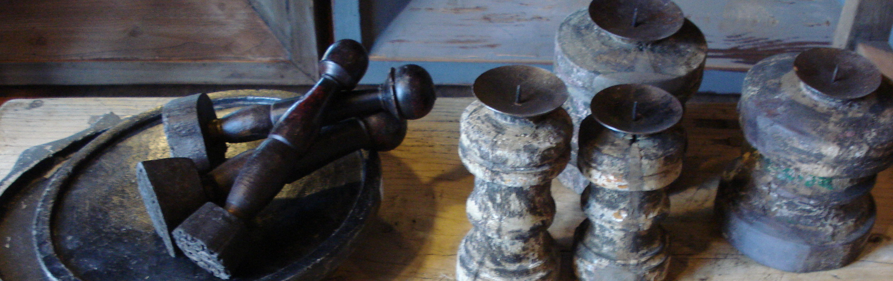
Woonaccessoires met een verhaal
Oude kruiken en potten, beelden, kandelaars en windlichten.
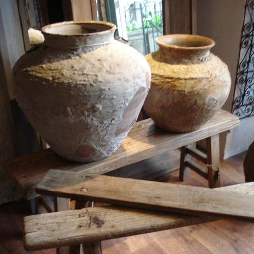
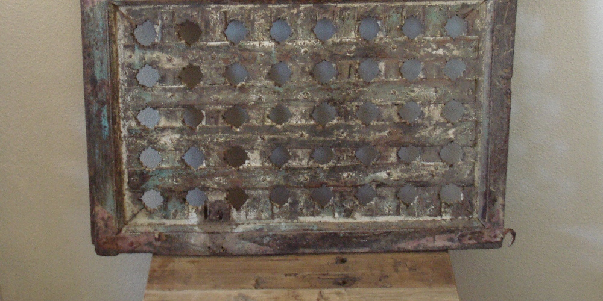
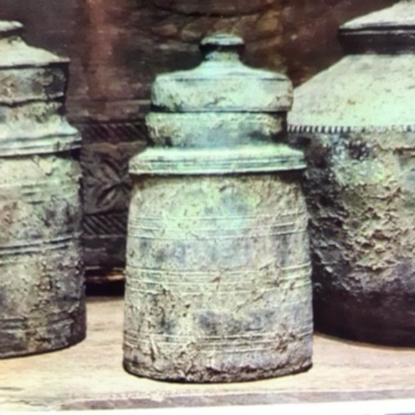
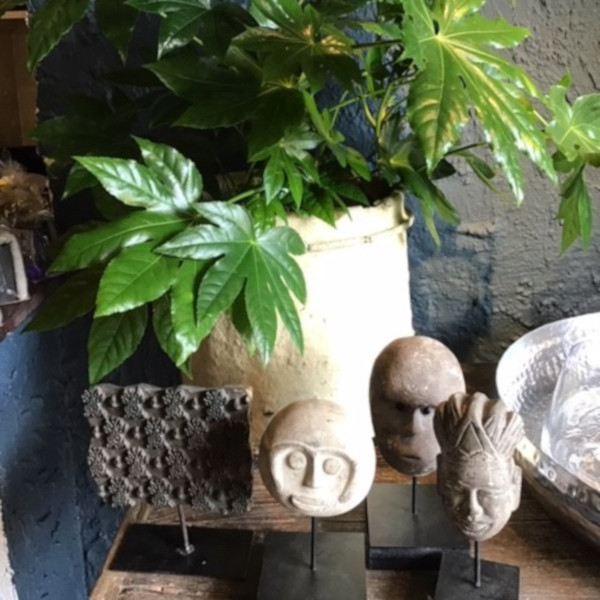
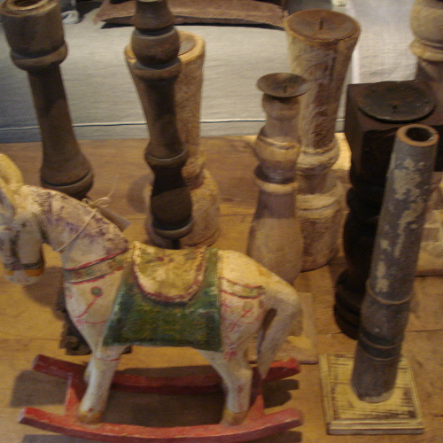
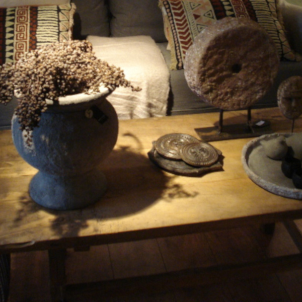
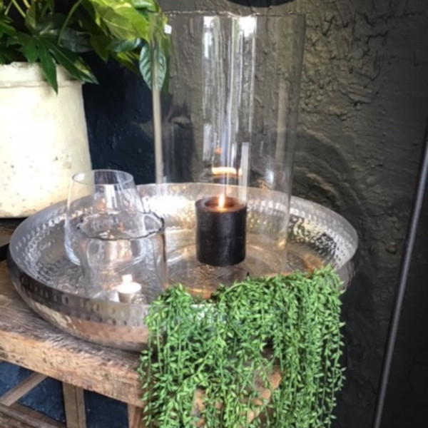
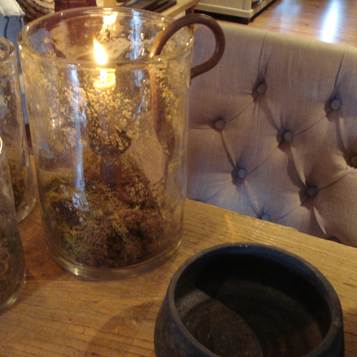
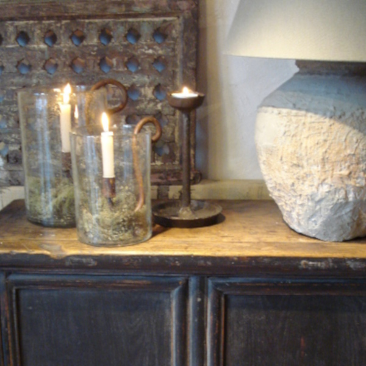
Bijzonder interieur
Fauteuils, bijzettafels en lampen in landelijke, stoere en industriële stijl. Hulp nodig bij het kiezen? Vraag gerust om interieuradvies.
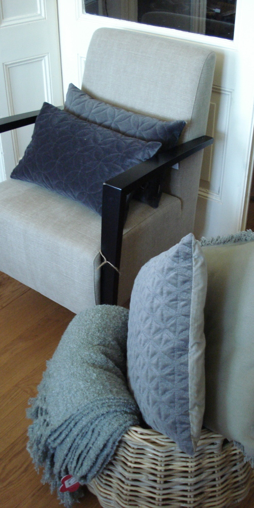
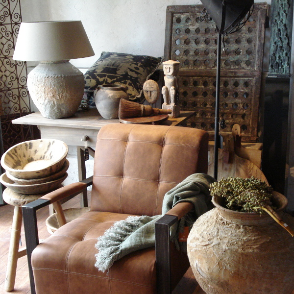
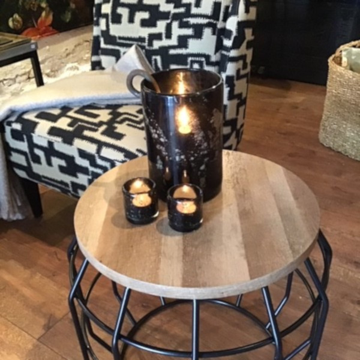
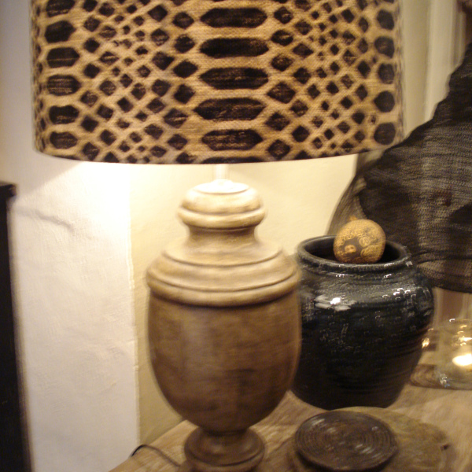
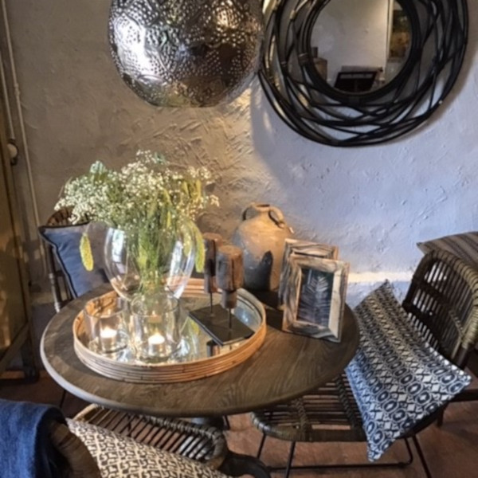
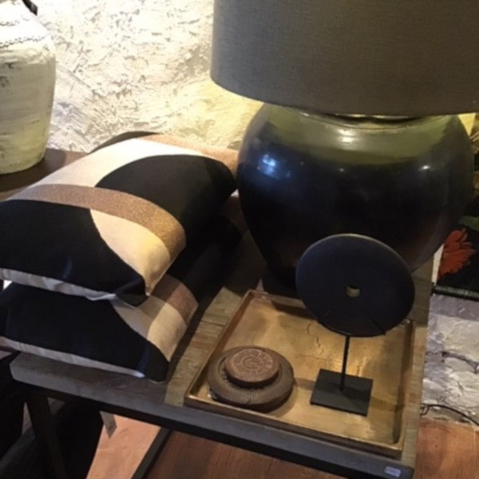
Kom langs
Van woensdag t/m zaterdag ben je welkom aan de Havendam. Een vraag over een stuk of over advies? Bel of stuur een WhatsApp.
Het Onderhuys
Cora van Steensel
Openingstijden
- Maandag en dinsdaggesloten
- Woensdag10.00 - 17.00
- Donderdag10.00 - 17.00
- Vrijdag10.00 - 17.00
- Zaterdag10.00 - 17.00
- Zondaggesloten
Je vindt ons aan de haven van Oud-Beijerland.